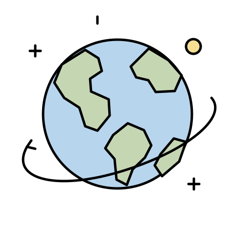

The rise of artificial intelligence has caused a great dependency on it from people and businesses, raising concerns of how it may take over human tasks and jobs, and can cause a decline in our creativity, curiosity, cognitive skills, and intelligence overall. Its future advancements could result in both beneficial and harmful changes in society and the environment through technological advancements, possible economic and labor changes, and governance impacts. AI has the possibility to solve some of our biggest global challenges, including the creation of new medicine and healthcare systems, new scientific discoveries, advanced education systems, monitoring climate health, and economic abundance. However, AI could also cause harm and disruption in the future through replacing the labor pool with robots and leaving people without jobs, producing hyper-realistic videos of fake news and information, and the loss of human control by underestimating AI’s power.
What could its future look like?
